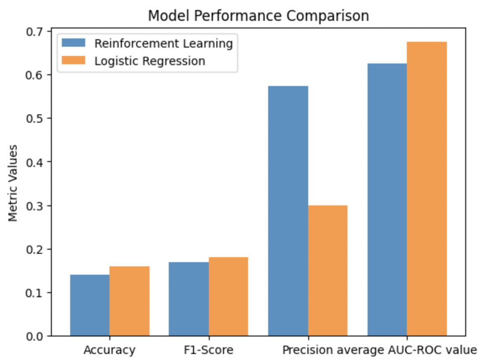

Machine Learning Analysis
This machine learning (ML) analysis focuses on Reddit discussions about U.S. states, aiming to uncover patterns and categorize conversations. Using advanced unsupervised learning techniques like Latent Dirichlet Allocation (LDA), we identify the dominant themes and visualize their distribution geographically. Each section dives into one aspect of state discussions, contributing to a broader understanding of state-based dynamics on Reddit. The data source for this analysis was the subreddit data
Most Common Topics by State
Overview
Using LDA, Reddit discussions were categorized into four primary topics:
- Tourism and Travel
- Politics and Governance
- Lifestyle and Culture
- Economy and Business
The most common topic for each state was identified and visualized on the interactive map below.
Insights
Tourism and Travel
- States like Florida, Nevada, and Hawaii prominently feature travel-related discussions.
- These discussions are likely tied to vacation planning, major tourist attractions, and seasonal trends.
Takeaway: Travel topics reflect Reddit’s role in sharing experiences and discussing popular destinations with strong tourism appeal.
Politics and Governance
- States like Montana, Washington, Arizona, and Michigan dominate political discussions.
- These states likely feature political conversations tied to regional issues, legislative matters, and elections.
Takeaway: Political topics highlight regional political activity and Reddit’s ability to surface diverse political conversations.
Lifestyle and Culture
- States like New York and Louisiana lead in discussions about lifestyle and culture.
- These states are recognized for their unique traditions, festivals, food, and cultural diversity.
Takeaway: Discussions about lifestyle and culture reflect the importance of local traditions and regional identity in state-focused conversations.
Economy and Business
- States like California and Texas dominate commerce-related discussions.
- These discussions center around industries, employment opportunities, and economic trends in these major business hubs.
Takeaway: Economic topics highlight Reddit’s relevance in tracking business activity and labor market dynamics in key economic states.
Context and Future Directions
Additional Perspectives
This is one of many analyses that explore Reddit discussions about U.S. states. Together with other insights, such as temporal trends, sentiment analysis, and subreddit-level dynamics, these findings provide a multifaceted view of online state discussions.
Next Steps
Further exploration could involve:
- Temporal Trends: How do discussions about topics like tourism and politics evolve over time?
- Engagement Analysis: Which topics drive the most interactions (upvotes and comments) on Reddit?
- Subreddit Activity: How do specific subreddits amplify or shape state discussions?
Predicting the Score of a Post
Overview
Using different spark regression models, the goal was to see if we could determine the score of a post (the total of likes minus the total of dislikes) using the text of the post itself and whether a state is mentioned or not. The goal of this was to determine if the presence of certain states were able to predict the score of a post, which is a stand in for the popularity.
Insights
Both a linear regression and random forest model were applied and both ended up with a RMSE of 68.3275. Two different models getting the same RMSE was a bit of a wake up call but the results were confirmed upon multile re-runs. It must be the case that 68.3275 is the best RMSE possible with the structure built in.
Context and Future Directions
Additional Perspective
A RMSE of 68.3275 is not a great result especially given that the majority of posts only have a score in the thousands. This leads us to believe that a model predicting the score is not feasible and that a state being mentioned does not have a tangible effect on the score.
Next steps
Furhter exploration could involve:
- Alternate Models: We could try out other machine learning models to see if we could get better results.
- Improved data cleaning: The data could be further cleaned through normalization and text editting which would improve results
- Change Target: While this is more of an expansion, changing the feature being targetted could allow for us to learn what we want through a different measure.
Predicting the subreddit based on the post
Overview
Two machine learning models, Random Forest Classifier and Logistic Regression, were implemented in PySpark to categorize product descriptions into predefined categories (main_category). The models used a text-processing pipeline, including tokenization, TF-IDF feature extraction, and classification. Their performance was evaluated on various metrics, including accuracy, F1-score, precision, and AUC-ROC scores for each class.
Insights
Random Forest Classifier achieved the best performance with following hyperparameters - Number of Features (HashingTF) : 50000 - Number of Trees : 100 - Max Depth : 5
Logistic Regression achieved the best performance with the following hyperparameters - Number of Features (HashingTF) : 10000 - Regularization Parameter (RegParam) : 0.1

Both models achieve an AUC-ROC score greater than 0.5, indicating that they are capable of distinguishing between the categories of the subreddit with some level of reliability. However, the logistic regression model (AUC-ROC: 0.6739) performs better than the reinforcement model (AUC-ROC: 0.6251) in terms of distinguishing the classes in the main_category.
Future Directions
Combine Random Forest and Logistic Regression for an ensemble model to leverage the strengths of both algorithms. Explore advanced NLP models like BERT or Transformer-based architectures for better semantic understanding.
Conclusion
By identifying the most common topic for each state, this analysis lays the groundwork for deeper investigations. Insights into Reddit conversations highlight the platform’s ability to capture real-world trends, opinions, and interests, making it a valuable source for understanding public discourse at a state level. Logistic Regression performs better in Accuracy, F1-Score, and AUC-ROC, making it the stronger model overall for predicting the subreddit based on the post.